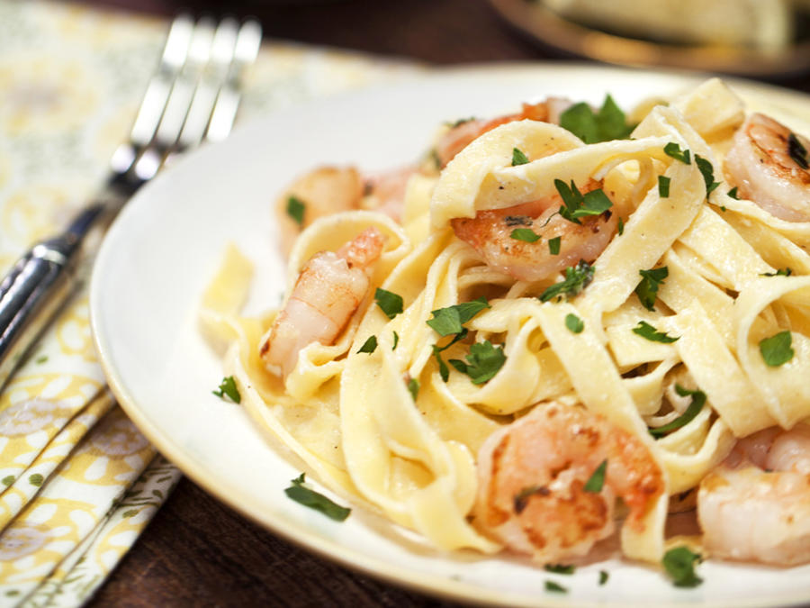

Shrimp Fettuccine Alfredo
Ingredients
- 1b. fetuccine
- 3tbs. butter
- 1b. shrimp, peeled and deveined, tails removed
- 1c. heavy cream
- 2 cloves garlic, minced
- 1 egg yolk
Directions
- Cook fettuccine according to the instructions on box, reserving a cup of pasta water to thicken the sauce, if needed
- In a large skillet over medium heat, heat 1 tablespoon butter until melted. Add shrimp, season with salt and pepper and cook until pink and completely opaque, 2 to 3 minutes per side. Remove shrimp from skillet and set aside
- Into the pan, add remaining 2 tablespoons butter and garlic. Cook until the garlic becomes fragrant, about 1 minute. Whisk in flour and cook until no longer raw, 2 minutes. Stir in heavy cream and milk, then whisk in egg yolk. Bring to a low simmer and whisk in parmesan. When cheese is melted and sauce has thickened slightly, add cooked pasta and shrimp, tossing to combine. Season with salt and pepper
- Garnish with more parmesan and parsley

Recommended Recipe
Lemon Garlic Shrimp
Garlic Butter Shrimp
Creamy Shrimp Scampi